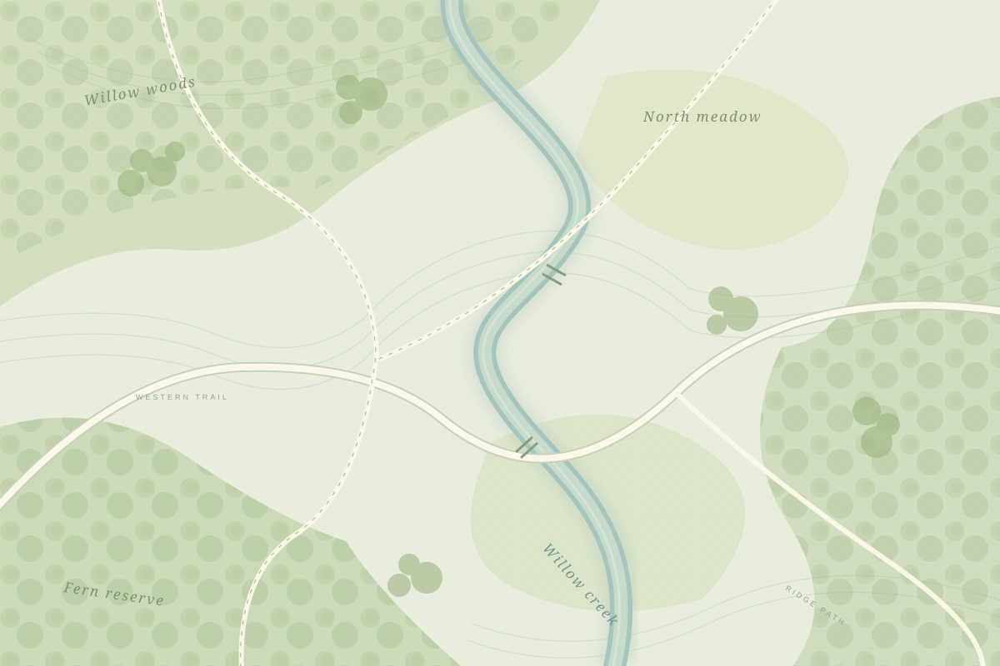

CHIRP FIELD ATLAS
Explore bird activity
Choose a bird and tap a station to see where it was detected.

Detections per listening hour0 24+◯ No listening data
SELECTED STATION
Sample observations. Heat shows activity around stations; areas between stations are unsampled.